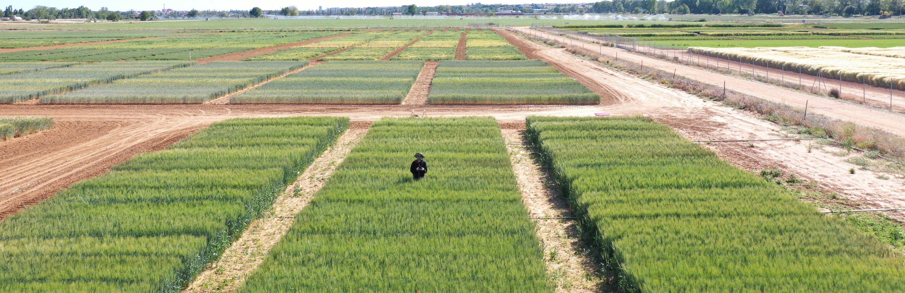

The Plant Phenotyping Bottleneck.

I am a Postdoctoral Researcher at the Institute of Agrifood Research and Technology (IRTA) with over 10 years of experience in digital agriculture and crop analytics. My research career has primarily focused on plant phenotyping, with a particular emphasis on integrating UAV remote sensing, spatial statistics, and machine learning into large-scale field trials and breeding programs. Currently, I am leading the implementation of high-throughput digital phenotyping workflows to monitor experimental platforms for the Sustainable Field Crops program, including cereals, legumes, and oilseed crops.
I hold a PhD in Plant Phenotyping from the Universitat de Barcelona, where I developed a versatile phenotyping platform using Unmanned Aerial Vehicles (UAVs) equipped with thermal, multispectral, and RGB cameras for wheat and maize monitoring. On a technical level, I am an AESA-certified drone pilot (5-15kg) and have developed open-source software tools such as Cereal Scanner and MosaicTool to translate complex agronomic data into actionable digital solutions.
To date, my scientific production includes 40 peer-reviewed publications with over 1,070 citations (Google Scholar). I have published in high-impact journals such as Agricultural Water Management (IF: 6.7), Frontiers in Plant Science (IF: 5.6), and the European Journal of Agronomy (IF: 3.9). Furthermore, I have a proven track record in securing and managing competitive funding, including Horizon Europe and National projects such as LEGENDARY, ROOT2RES, and FENOMED.
My long-term objective is to bridge the gap between academic research and the private industry by leading initiatives in scalable agrotechnology. I am particularly interested in advancing predictive modeling for yield and phenology under climate change conditions. My professional background is highly international, featuring a research stay at the University of Melbourne and projects across Australia, Africa, and Europe. I am also an active member of international consortia such as the Wheat Initiative and the PANGEOS COST Action.
The Plant Phenotyping Bottleneck.

Climate change resilience of agricultural systems in the Mediterranean region.

RGB imaging for low-cost phenotyping.

Drones.